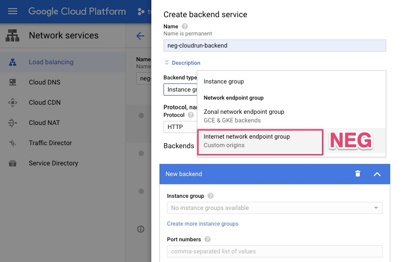

[GCP]Serverless network endpoint groups | Cloud Run 介接 Google Load Balance
Status: Completed
Agenda
簡介 Serverless Network Endpoint Groups
目前NEG support serverless (in in Beta) [1]，透過Load balance 轉 HTTPs 轉換為HTTP 可以滿足BIOS 連接Cloud Run需求。另外我理解acer，也需要WAF功能抵擋外部攻擊，但現在[Cloud Armor[2]](Cloud Armor.)還未能實現，最後文章指出未來幾個月Cloud Armor也會加入戰力
Network Endpoint Groups (NEG) 新功能歸功於Google Cloud網絡和負載平衡的基本功能， NEG的運作原理，請見圖1，它是存在Load balance的後端，它可以定義應外部流量，如何到達一組端點(Endpoint)，因此NEG 可以服務外來request，並將request直接經Load balance發送給GCP backend (eg. 可以是Compute Engine VM 或在VM上運行的服務，或是Endpoint URL, FQDN: port, IP)
準備環境
- Cloud Run server：已準備
ngnix webhttps://ngnix-v1-ve3udnlh4q-uc.a.run.app - Network Endpoint Groups (NEG) ：設定一組
Network endpoints - Load balance：設定backend選擇
Network endpoints
A Service runs on Cloud Run
Step1. 建立Cloud Run Service
endpoint: https://ngnix-v1-ve3udnlh4q-uc.a.run.app
Step2. 測試endpoint
注意現在使用https連線
Enable Network Endpoint Groups(NEG)
Step1. 建立 Network Endpoint Group
- 此步驟是將外部來源轉為
GCP 內的 backend service，方可與 GCP HTTP(S) LB 串接。 - 路徑 GCP console -> Compute Engine -> Network Endpoint Group
Step2. Create Network Endpoint Group
Step3. 設定NEG
- NEG 命名
- Network endpoint group type：請選
Internet - Default port：因為來源是Cloud Run 走
HTTPs443 - Add through endpoint
- Fully qualified domain name
- Fully qualified domain name：請輸入你的
Cloud Run endpoint
(eg. ngnix-v1-ve3udnlh4q-uc.a.run.app)
Load balance
Step1. 建立 Load balance
- 建立 GCP HTTP(S) LB, 在 GCP console -> Network services -> Load balancing
- 選擇
backend services
Step2. 設定 backend
- backend service 命名
- backend type：請選
Internet network endpoint group - Default port：因為來源是Cloud Run 走
HTTPs443

詳細設定如下
- Protocol 請選
HTTPS - Backend 選擇上面步驟建立
Network Endpoint Group - 其餘設定依需求自行調整
header(非常重要)
- Custom request headers
- Header name：
host - Header value：Cloud Run 產生的
endpoint
(eg. ngnix-v1-ve3udnlh4q-uc.a.run.app)
- Header name：
Step2. 設定frontend
這邊可以有不同的option HTTP, HTTPs，也可以同時開啟 80 與 443 ，作法需各別開兩個frontend設定
Option1. HTTP
frontend 命名
Protocol ：選擇
HTTPIP address ：可選擇
Ephemeral, 或先註冊一組static IPPort：
80
Option2. HTTPs with certificate
frontend 命名
Protocol ：選擇
HTTPSIP address ：可選擇
Ephemeral, 或先註冊一組static IPPort：
443Certificate 可以有二種選擇
https 可以
自行管理或是使用Google管理的證書若要使用自己的SSL證書，可上傳憑證檔；format 如下
填入Public key certificate,Certificate chain,Private key
Certificate：填入
Public key certificate,Certificate chain,Private key設定完後建立，需要時間生效
使用Google管理的SSL證書
憑證也可以使用Google管理的SSL證書，輸入網域名稱即可，若該網域的DNS設定有正確指向HTTP(S) Load Balancer的IP，少許時間之後可以看到該證書為
ACTIVE狀態。
Review Setting of Load balancer
- 系統會確認您的設定值
- 若無誤status 會呈現綠色勾勾
Test Original Cloud Run with “HTTP header”
Test1. curl
- Cloud Run base是採kubernetes，故ingress是L7 load balance，所以Cloud Run 需要透過
headerhost來作為辨識 - 因此curl 時可以指定Load balance HTTP IP後，再補上
-H host header
1 | $ curl -k -H "host: ngnix-v1-ve3udnlh4q-uc.a.run.app" http://35.201.76.173 |
Test2. Browser
- 我們已經了解Clour Run識別需要使用header，其實上面設定load balance froentend時，就已經把header寫入，故我們在Browser連線時就不用在加上header
- 透過HTTP(http://35.201.76.173/)，可以正常連線至Cloud Run ngnix 網頁